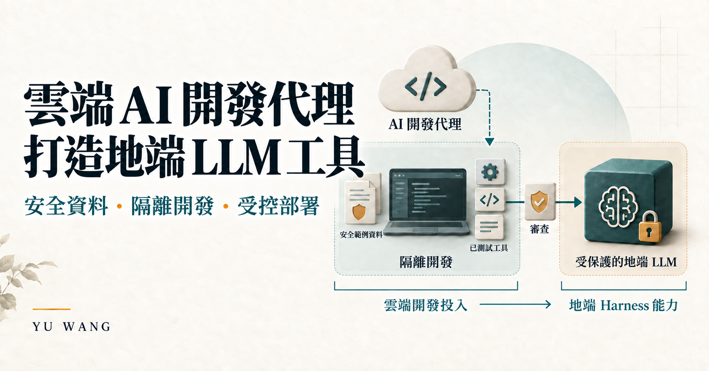

01 / 進行中
以 AI 開發代理打造地端 LLM 工具與 Harness
我使用 Codex 等由雲端模型支援的 AI 開發代理，將工程需求轉化為地端 LLM 工具、應用流程與檢查機制。

釐清雲端模型與本機執行的邊界
AI 開發代理透過雲端模型進行推理與開發協助；開發環境、工具執行及授權範圍內的測試則位於本機隔離環境。我在開發過程使用安全資料或合成資料，再將完成的變更準備部署至受保護的地端環境。
這套做法的核心，是將雲端 Token 投入轉化為可重複使用的地端 Harness 能力，包括工具、任務路由、檢索與驗證。我的工作重點在模型周邊的應用系統。
開發方式
- 定義任務與邊界。確認輸入、預期結果、允許的操作及驗收標準。
- 由 AI 開發代理協助本機開發。在隔離工作環境中，使用 Codex 與安全或合成輸入來實作及修訂工具。
- 部署前檢查行為。在授權測試範圍內檢查路由、輸出格式、失敗處理與復原能力。
- 準備受控部署。確認版本及環境需求，保留快照與復原程序，並依目標環境訂定驗收方式。
已開發的內容
- Open WebUI 工具與過濾器，處理知識來源、文件附件、引用及明確的研究路由。
- 受限的公開研究橋接，以及結構化摘要、文字比較、事實／風險／行動整理流程。
- 顧問應用 Harness，包含任務路由、快取摘要檢索、案例狀態更新及生成後檢查。
- 可重播的評估流程，協助定位路由、模型整合、格式及狀態更新中的問題。
- 受保護應用環境的部署檢查、本機模擬、版本化快照與復原程序。
目前階段
進行中
已有實作元件，各環境的驗證進行中。Open WebUI 整合已有實際工具使用的歷史紀錄。另一套顧問 Harness 仍是原型，最近一次整合評估使用模擬模型；真實模型的回答品質，以及受保護環境的驗收，仍須分別確認。
這項工作不涉及模型權重訓練，也沒有宣稱經量測證實的推論速度提升。